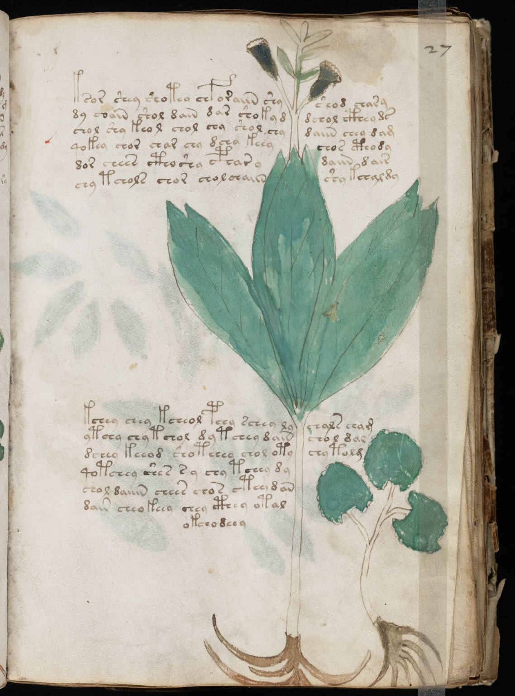

f27r
1ksor shey shoteo chforaiin shyshod chary2dy coain shol dain dar shokyddchol cthey ds3chol shy keol chol shy shol chydaiin chey dam4qokey chor char chy dchy keeychos cthody5dor chees ctho shy cpharydaiin dair6chy tchols chor chol chaiinshy kchaldy7kchey chey kcheol pchy schey lychals cham8ytchy chy tchol dy tchey dainchol dal9dchey keeod sho tchey chol otychy tolm10qotchey shes s y chy tchey dy11chol daiiin chees chos ctey dan12dain cheokeey chey cthey otal13okchodeey
